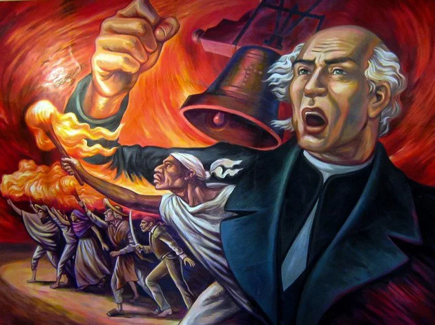

La Independencia de México
El Mes Patrio en México se celebra durante todo septiembre, siendo la fecha principal la noche del 15 y el día 16 de septiembre, cuando se conmemora el inicio de la lucha por la Independencia nacional en 1810.

El Grito de Dolores
La madrugada del 16 de septiembre de 1810, el cura Miguel Hidalgo y Costilla hizo sonar las campanas de la parroquia de Dolores para convocar al pueblo a levantarse en armas. Este evento es conocido como el "Grito de Dolores" y marcó el comienzo de la lucha por la libertad.

Tradiciones Patrias
Durante este mes, las familias mexicanas acostumbran adornar sus casas con banderas, escuchar música mariachi y disfrutar de platillos tradicionales como el pozole, los chiles en nogada, los tacos y los pambazos.